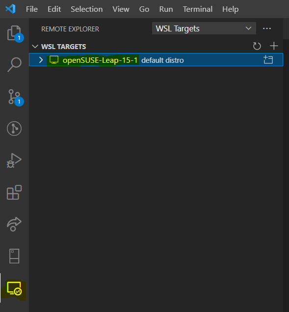
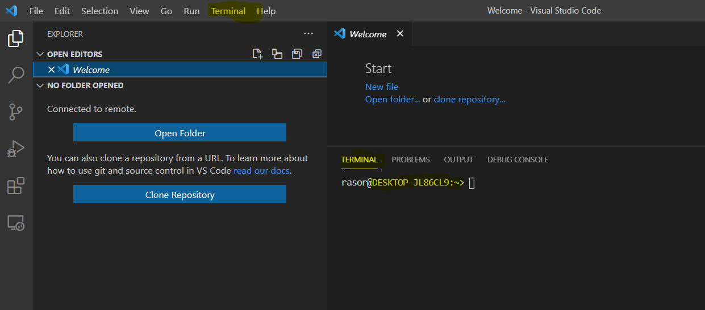

Install apps on OpenSuse on Wsl2 in Windows 10
Posted on January 01, 2099 in DevOps Updated: January 01, 2099
This blog is a continuation from Install Docker Desktop on Windows 10 Home - including WSL, where I installed WSL2 on a Windows 10 laptop including openSUSE-Leap-15-1 as default distro in WSL2.
In this blog I want to start using OpenSuse and see if it gives an ok experience running Linux on Windows.
If you have installed WSL2 and a default linux disto and in Visual Studio Code have installed Remote WSL then you should open Remote WSL and be able to see your default distro: .
Next you should right-click the distro and Connect to WSL.
Then open a terminal. You will be in your home folder ~.
.
Nice - so now you can install stuff:
# Do we have curl?
curl --version
# curl 7.60.0 (x86_64-suse-linux-gnu) libcurl/7.60.0 OpenSSL/1.1.0i zlib/1.2.11 libidn2/2.0.4 libpsl/0.20.1 (+libidn2/2.0.4) libssh/0.8.4/openssl/zlib nghttp2/1.31.1
# Do we have wget?
wget --version
# GNU Wget 1.19.5 built on linux-gnu.
# Do we have git?
git --version
#git version 2.16.4
# Do we have nvm?
# https://github.com/nvm-sh/nvm
nvm -list
# Nope
curl -o- https://raw.githubusercontent.com/nvm-sh/nvm/v0.37.2/install.sh | bash
# Something fails with this command - and it opens an editor in the terminal - kill the terminal
# It does download nvm to ~/nvm
# But it does not add envir var
printenv NVM_DIR
# Also the distro does not have a ~/.bash_profile
I think I should try an Ubunto distro instead
The End